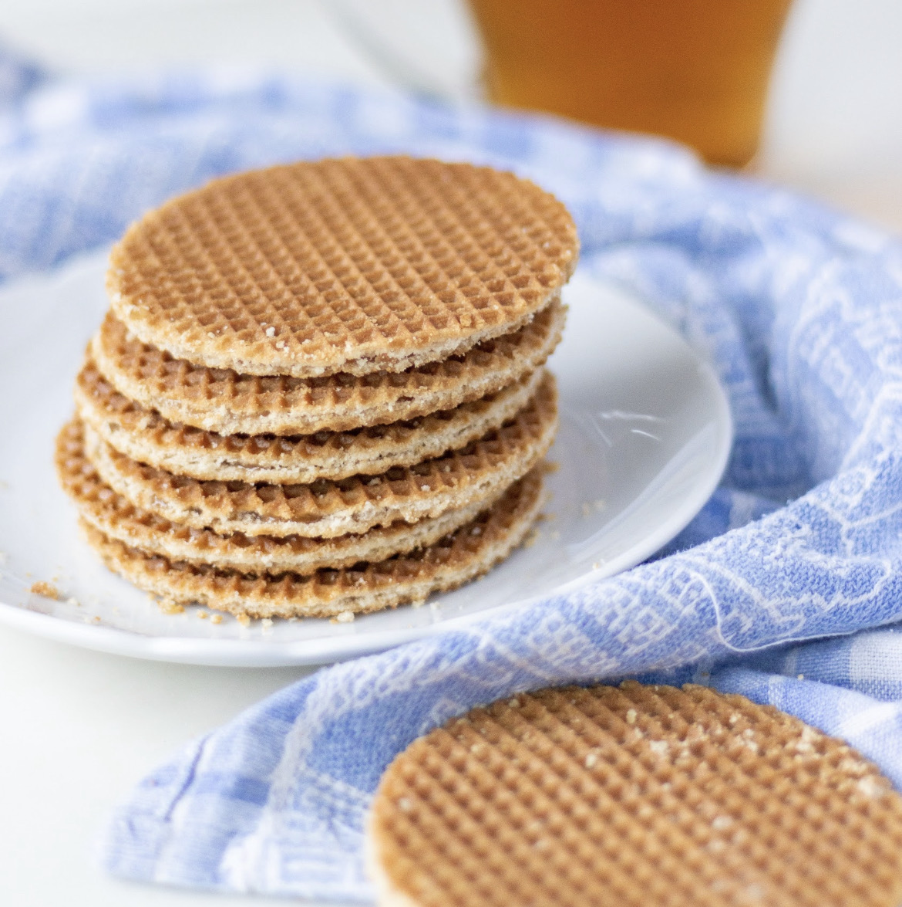

Home
Noord-Amerika
Amerikaans
Mexicaans
Europa
Duits
Frans
Italiaans
Nederlands
Azië
Indonesisch
Japans
Vegan
Over ons
Nederlands
Voorgerecht
Hoofdgerecht
Nagerecht
Voorgerecht
Groentesoep met balletjes (2 personen)
Ingrediënten
100 gram rundergehakt
Paprikapoeder
Knoflookpoeder
Zout en peper
400 ml water
100 ml ketchup
0,66 blokje groentebouillon
83,3 gram soepgroenten (fijngesneden)
0,33 grote ui
0,33 klontje boter
Benodigdheden
Soeppan
Bereidingswijze
Meng het gehakt met de kruiden en draai er kleine balletjes van.
Snipper de ui en smelt de boter in een soeppan.
Doe de ui erbij en bak deze tot de ui lichtbruin begint te kleuren.
Voeg de soepgroenten toe en bak 1 minuutje mee.
Voeg dan het water en de groentebouillon blokjes toe en breng aan de kook.
Voeg de gehaktballetjes toe en laat de soep nog 10 minuutjes zachtjes doorkoken.
Voorgerecht
Nagerecht
Hoofdgerecht
Pannenkoeken (3 personen)
Ingrediënten
2 eieren
250 gram bloem
500 ml melk
Zout
Boter of margarine
Benodigdheden
Koekenpan
Mixer of handmixer/garde met kom
Soeplepel
Spatel
Bereidingswijze
Meng de eieren met een snufje zout in een kom.
Voeg de helft van de bloem toe en mix dit. Voeg daarna de helft van de melk toe en mix dit weer.
Voeg nu de laatste helft van de bloem toe en na het mixen de andere helft van de melk. Mix tot alle klontjes verdwenen zijn.
Verwarm een beetje boter of margarine in een pan. Wacht tot de pan goed warm is.
Verdeel met een soeplepel wat beslag in het midden van de pan. Beweeg de pan in een rondje zodat de hele bodem bedekt is met beslag.
Bak de pannenkoek ongeveer 2-3 minuten tot de hele bovenkant droog is,
je kunt of de pannenkoek bruin is aan de onderkant door er aan spatel onder te steken en de pannenkoek voorzichtig een beetje optillen.
Draai de pannenkoek om en bak deze nog ongeveer 1-2 minuten.
Leg de pannenkoek op een bord en leg daaroverheen een ander bord of een grote deksel zodat de pannenkoek niet koud wordt.
Bak zo ook de rest van de pannenkoeken.
Je kunt er lekkere dingen opdoen zoals stroop, poedersuiker, aardbeien, chocolade pasta/saus en blauwe bessen.
Voorgerecht
Hoofdgerecht
Nagerecht
Stroopwafels (15-20 stuks)

Ingrediënten
30 ml melk (lauwwarm)
10 gram gedroogde gist
300 gram bloem
150 gram boter (kamertemperatuur)
90 gram witte basterdsuiker
1 ei (kamertemperatuur)
0,25 theelepel zout
200 gram keukenstroop
100 gram lichtbruine basterdsuiker
75 gram boter
Halve theelepel kaneelpoeder (optioneel)
Boter of olie om in te vetten
Benodigdheden
Plasticfolie
Middelgrote kom
(Stroop)wafelijzer
Bereidingswijze
Meng de melk met de gedroogde gist.
Doe de bloem, boter, basterdsuiker, het ei en zout in een kom en meng deze samen met het gistmengsel tot een soepel deeg.
Dek de kom af met plasticfolie en laat het deeg op een warme, tochtvrije plek 1 uur rijzen.
Voor de vulling doe de stroop in een steelpan en verwarm deze al roerend op middelhoog vuur.
Voeg de lichtbruine basterdsuiker en de boter toe. Breng het mengsel al roerend aan de kook.
Laat de stroop 1-2 minuten doorkoken en blijf roeren totdat alle suiker kristallen opgelost zijn.
Haal de pan van het vuur en breng de stroop eventueel op smaak met de kaneel.
Verwarm het (stroop)wafelijzer zo heet mogelijk voor en vet hem in met boter of olie.
Maak bolletjes van het deeg van 30-40 gram per stuk.
Bak ze in het (stroop)wafelijzer bolletje voor bolletje in 1-3 minuten tot goudbruine wafels.
Snijd direct na het bakken met een ronde uitsteker van 9-10 centimeter doorsnede de randjes van de wafel af. Snijd de wafel met een scherp mes doormidden.
Bestrijk een helft met behulp van een paletmes (of een ander mes) met stroop en plaats daar de andere helft op.
Laat de stroopwafels afkoelen op een rooster.